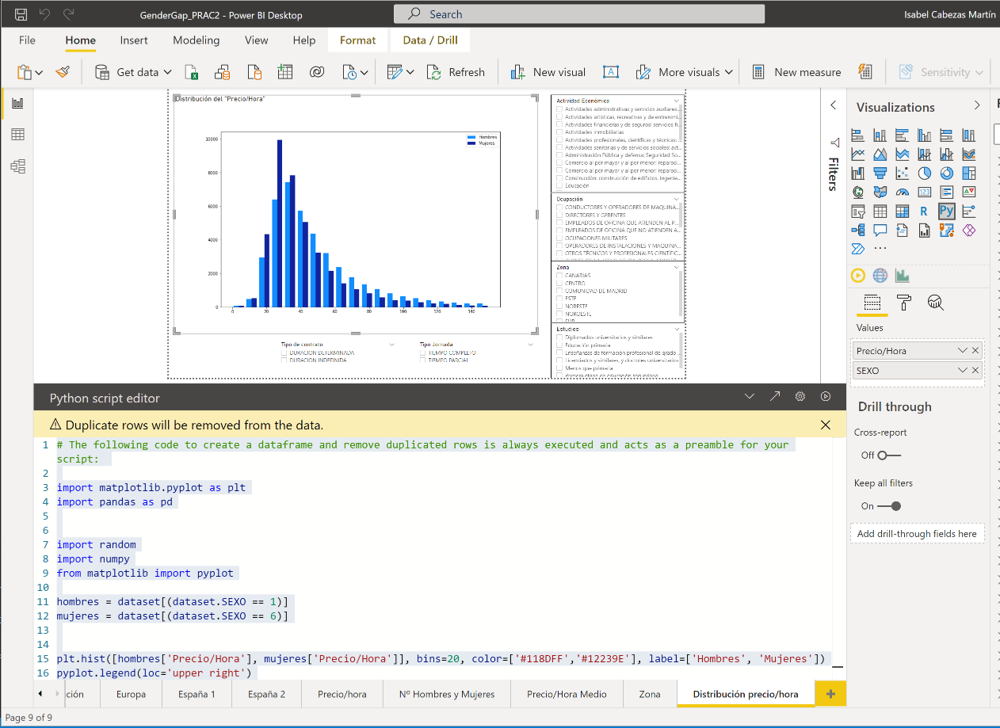

PRÁCTICA 2 - Visualización de Datos
Isabel Cabezas Martin
Master Universitario Ciencia de datos de la UOC
Desigualdades laborales de la mujer en España.
Páginas que contiene el dashboard:
-
1. Evolución de sueldo y situación laboral de la mujer entre el año 1995 y 2008:
Podemos ver el aumento de población activa femenino y cómo ha ido evolucionando el sueldo con la edad, en el tiempo.
Vemos que el gran "gap" salarial a mediados de los 90, comenzaba entre los 20 y los 30 años, pero que con el paso del tiempo se ha ido atrasando (y también acortando).
Este gráfico está explicado con más detalle en la PEC3, así que en el actual no he repetido el contenido analizándolo en profundidad
-
2. Salarios medios en Europa:
Vemos la situación de España (en términos de brecha salarial) en comparación con otros paises de la UE.
Este gráfico está explicado con más detalle en la PEC3, así que en el actual no he repetido el contenido analizándolo en profundidad.
-
3. Otras condiciones
Para contestar por qué hay brecha salarial hemos estudiado diferentes ámbitos y características entre trabajadores hombres y mujers.
Sea cual sean los estudios, o los años de antigüedad, el sueldo de los hombres es más alto que el de las mujeres.
Quizás sea porque nosotros tenemos más jornadas parciales, o porque nuestros contratos son temporales (la precariedad laboral es claramente mayor entre mujeres)
Otra de las condiciones que vemos es que las mujeres hacen muchísimas menos horas extras que los hombres.
Ya había expuesto una posible explicación sobre esto en la PEC3: El número de horas dedicadas por las mujeres a otras labores (en casa) triplica la de los hombres.
Pero estas no son remuneradas.
Este gráfico está explicado con más detalle en la PEC3, así que en el actual no he repetido el contenido analizándolo en profundidad.
-
4. Otras condiciones
Comparativa de salario base en actividades económicas y ocupación.
Este gráfico está explicado con más detalle en la PEC3, así que en el actual no he repetido el contenido analizándolo en profundidad.
Sin embargo sí que hago referencia a él para ver las actividades mejor pagadas y la proporción mujeres/hombres que hay en esta actividad.
-
5. Precio/hora
¿Que tengamos menos sueldo depende de que trabajamos menos horas (remuneradas)?
No necesariamente: he hecho un cálculo del precio hora.
No es que nosotras "elijamos" conciliar y trabajar menos horas. En ese caso si nuestra jornada parcial es la mitad, el sueldo debería ser la mitad.
Pero tampoco ocurre eso. El precio hora es menor.
-
6. Número de hombres y mujeres por actividad económica.
En términos generales podemos ver que los trabajos masculinos (con más número de hombres, o que históricamente han sido ejercidos por varones)
están mejor pagados que los femeninos.
-
7. Precio/hora por ocupación y estudios.
En términos generales podemos ver el precio hora para la misma ocupación y para el mismo nivel de estudios es menor en hombres que en mujeres.
Las mujeres son pagadas menos por el mismo trabajo, teniendo la misma preparación.
-
8. Estudio de la brecha salarial en diferentes zonas de España.
He usado otra herramienta para dibujar un mapa. El enlace al mapa (con el que se puede interactuar) está en el dashboard
Las diferencias salariles son mayores en el noroeste y en el sur (donde los sueldos son más bajos).
Y menores (porcentualmente) en el este y en Madrid (donde por cierto, los sueldos son mayores)
-
9. Distribución del precio hora con filtros.
Resumen de todo lo anterior:
Podemos ver las proporciones de los sueldos de hombres y mujeres en cualquier ocupación, actividad, zona, nivel de estudios y también filtrando por tipo de contrato y jornada.
Este gráfico está hecho con python embebido en PowerBI.
El código está aquí
